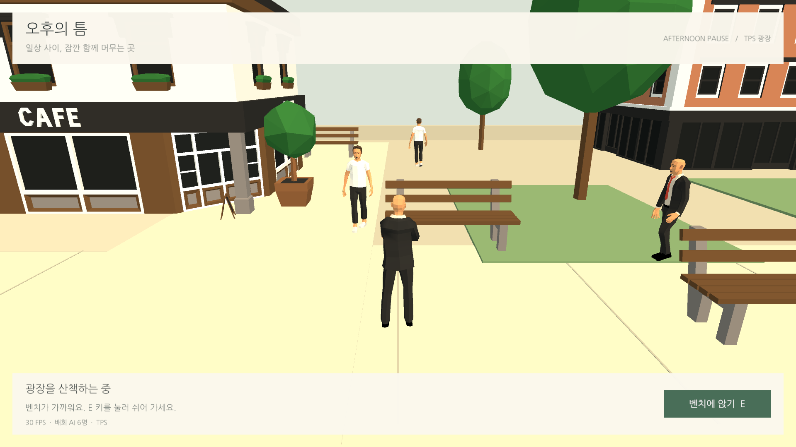
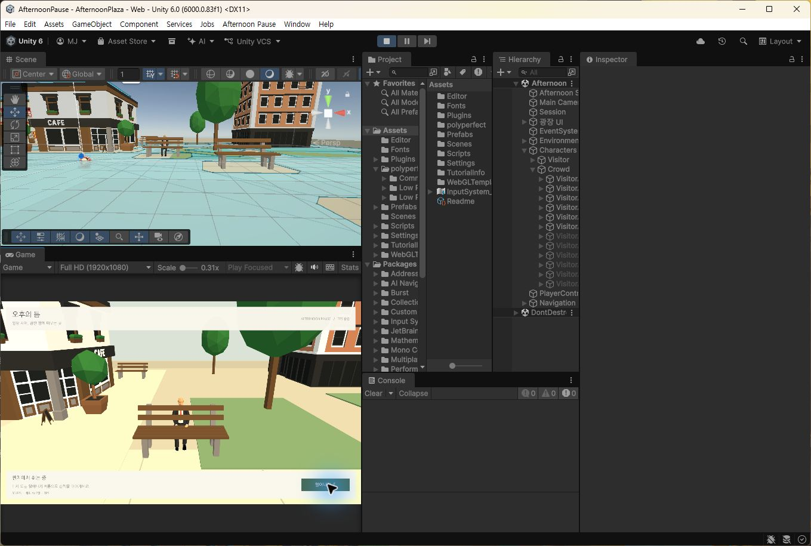
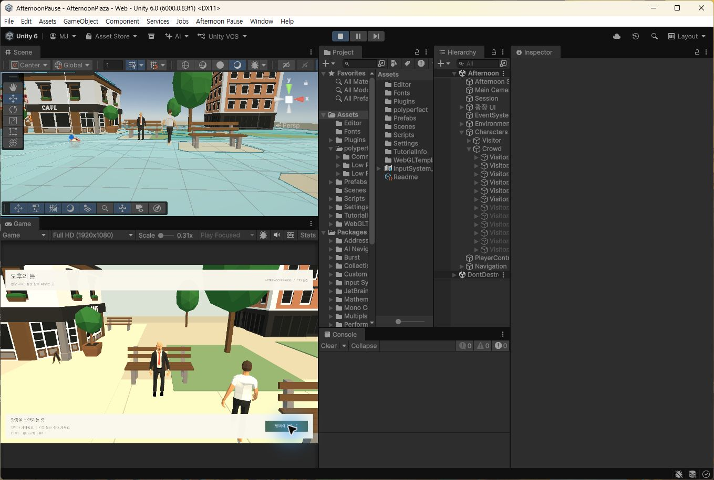

Tracefolio REPORTS & ISSUES
Tracefolio REPORTS & ISSUESAI 실행 시 NavMeshPath 생성자 초기화 오류 수정
해결NavMeshPath 생성을 필드 초기화식에서 Awake로 옮겼습니다. 실제 Unity 초기화와 39초 Play에서 오류 없이 AI 6명 이동을 확인했습니다.
작업 결과
오류 수정과 요청하신 짧은 Unity 테스트를 완료했습니다. 웹 빌드는 수행하지 않았습니다.
변경 내용
재현 조건
Unity 6000.0.83f1, AfternoonPlaza 씬, AI 기본 6명
재현 순서
AfternoonPlaza 씬을 불러오거나 Play를 시작하면 PlazaAIController 생성 시 예외가 발생했습니다. 사용자 오류 스택과 기존 필드 선언으로 확인했습니다.
기대 동작
컨트롤러가 정상 초기화되고 AI가 배회해야 합니다.
실제 동작
InitializeNavMeshPath is not allowed to be called from a MonoBehaviour constructor (or instance field initializer). AIController.cs:17에서 예외가 반복됐습니다.
원인
AIController의 필드 초기화식 new NavMeshPath()가 MonoBehaviour 생성자에서 실행되어 Unity 네이티브 초기화 API를 허용되지 않은 시점에 호출했습니다.
적용 내용
NavMeshPath 필드에서는 생성하지 않고 Awake에서 생성하도록 변경했습니다. 소유권·배회 경로 선택 로직은 유지했습니다. Unity 6000.0 공식 문서도 생성자 대신 Awake 초기화를 안내합니다. 공식 Awake 문서
교훈 검토: 확인된 초기화 제약을 프로젝트 AGENTS.md에 추가했습니다. 전역의 실제 실행 검증 의무는 이미 존재하므로 중복 규칙을 추가하지 않았습니다. 임시 초기화·Play 계측 코드는 검사 후 .meta와 함께 제거했습니다.
검증
실제 실행 중인 Unity에서 AddComponent → Awake → 네이티브 ClearCorners → 비활성/재활성 → 제거를 검사했고 오류 0건입니다. unity-smoke.json
약 39.1초, 40회 상태 기록에서 오류 0건, 활성 AI 6명 전원 NavMesh 연결·이동, 경로 완료 12회, 경로 실패 0회를 확인했습니다. play-summary.json / play-smoke.json
마우스로 벤치 앞까지 이동한 뒤 UI 버튼의 착석·기립을 실제 조작으로 확인했습니다. E 키 자동 입력은 확실한 동작을 확인하지 못했으므로 통과로 기록하지 않습니다. Play 종료 후 임시 QA 소스를 제거하고 Runtime 20개·최종 Editor 1개를 다시 컴파일해 통과했습니다. compile.json



수정 전 오류 화면은 확보하지 못했습니다. 사용자가 제공한 오류 텍스트가 수정 전 근거이며 전후 화면 비교 완료로 표시하지 않습니다. 이미지는 실제 실행 원본 PNG로 각각 200KB 이하이며 편집·리사이즈하지 않았습니다.
남은 사항
이번 오류 수정·짧은 테스트의 남은 항목은 없습니다. 전체 TPS 검증과 웹 성능 측정은 별도 미완료 항목입니다. 이번 Editor 실행 수치를 웹 성능으로 사용하지 않습니다. 웹 빌드는 사용자 요청에 따라 생략했습니다.
작업 시간
- 제안 시간: 5~10분
- 실제로 완료된 시간: 2026-11-04 00:10:44 KST 시작. 수정·초기화 검사·Play 검사·검사 도구 제거 후 컴파일 완료. 2026-11-04 00:17:30 KST 기록, 경과 6.8분. 공개 배포 확인은 후속 단계입니다.
- XERJ: 미사용 — XERJ 도구 미제공. 사용자 스택과 rg·현재 소스 및 실제 Unity 실행 결과로 확인했습니다.